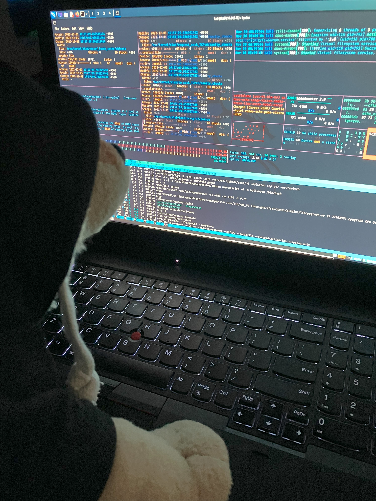

Hi, I'm Stevie! Welcome to my hacker blog!
Today I discovered that rather than delete content or wait to push it out, I can simply make
it the same color as the background and then visitors to the site can't see it. Definitely don't
highlight the entire page though. That content isn't ready.

*DRAFT* I previously posted about using white text to hide content but I'm starting to think
that isn't the best way. Instead, I think it's probably better to make the content a comment,
then visitors would need to //Right Click -> View Page Source// or open developer options. Surely
no one would try that though! *DRAFT*